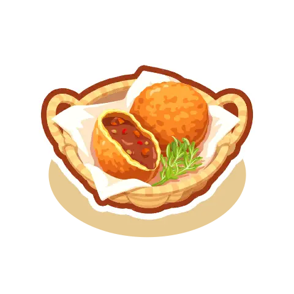
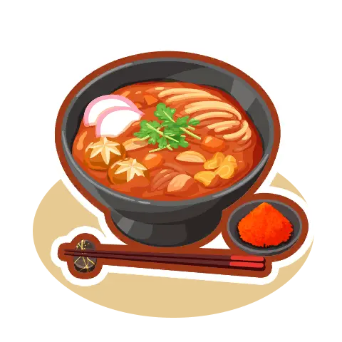

新レシピ「ワカクサカレーパン」「とびはねるカレーうどん」を追加！最適備蓄での強さと相性考察

1. 新カレー2種を料理シミュレーターに追加実装！
当サイトの「ポケスリ料理計算機」および「3ジャンル最適備蓄シミュレーター」に、新しく実装された大型カレーレシピ「ワカクサカレーパン」と「とびはねるカレーうどん」の2種類をデータ追加いたしました！
・食材: コーン×18 / トマト×15 / オイル×14 / ミルク×10
・基礎エナジー: 13,010

・食材: しっぽ×16 / ネギ×16 / ミート×14 / タマゴ×10
・基礎エナジー: 14,028
どちらも鍋容量50〜60個クラスの強力な上位レシピですが、実際にシミュレーターで他ジャンル（サラダ・デザート）との備蓄相乗効果を検証してみると、明暗が分かれる面白い結果となりました。
2. 【ワカクサカレーパン】選択肢としてかなり強力！最適備蓄でも優秀
まず「ワカクサカレーパン」ですが、こちらは選択肢として非常に強いです！
3ジャンル最適備蓄シミュレーターにかけても、上位の組み合わせにしっかり食い込んでくる優秀なポテンシャルを持っています。
3. 【とびはねるカレーうどん】上位レシピとの食材相性が噛み合わず惜しい？
一方で、基礎エナジーが非常に高い「とびはねるカレーうどん」については、少し残念な課題が見えてきました。
必要食材が「ヤドンのしっぽ」「ふといながねぎ」「マメミート」「とくせんタマゴ」とやや特殊で、他の最上位サラダやデザートと食材被りの相乗効果が生まれにくいのです。
そのため、3ジャンルを均等に集める最適備蓄シミュレーターでは、どうしてもTOP組み合わせに入ってこないのが惜しいところです。
4. ルチャブルの立ち位置と今後の新レシピ追加への期待
とびはねるカレーうどんの登場によって期待されたのが、タマゴ・ミート・ネギを運んでくる「ルチャブル」の活躍でした。
しかし現状、うどん自体の備蓄汎用性がそこまで高くないため、正直なところ「ルチャブルの立ち位置は少し厳しいな…」というのが率直な所感です。
5. 現状のカレー枠は「しんりょくアボカドグラタン」が他ジャンルと好相性
現状のカレー・シチュー環境においては、依然として「しんりょくアボカドグラタン」や「ニンジャカレー」が他ジャンルとの食材被りシナジーに優れており、無理にとびはねるカレーうどんを最優先で作る必要性は今のところ薄いと言えます。
手持ちのポケモン厳選状況や食材バッグの空き枠と相談しながら、ワカクサカレーパンなどの作りやすい上位レシピからレベル上げを進めていくのがおすすめです！
6. まとめ：シミュレーターで最新レシピの組み合わせを試してみよう！
新レシピの追加に伴い、料理環境は常に変化しています。
当サイトでは、今後も新料理や新ポケモンの登場に合わせて最速でシミュレーターをアップデートしていきますので、ぜひ普段の備蓄計画にお役立てください！